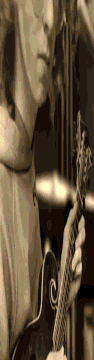
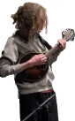
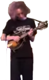
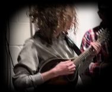

"I am a very special jazzy person"
Tucker Slack is a Jazz, Celtic and Bluegrass mandolinist from New Hampshire. He is currently one half of the mandolin section in the NH-based acoustic band Pulling Strings, and plays mandolin & guitar in the folk-rock/gibberish-yelling band The Flying Ratstickles.
He has had the opportunity to play with a lot of great musicians, from playing jazz on an island with Ethan Setiawan and Joe K. Walsh, to leading old-time jams at midnight with Jeff Claus, Bruce Molsky and Darol Anger.
Tucker plays a 2019 Lawrence Smart A5 Mandolin.
